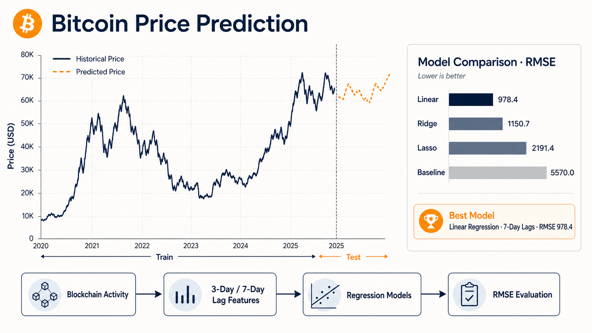

Bitcoin Price Prediction
Regularization is supposed to help — here it did not. A controlled comparison of Linear, Ridge, and Lasso regression on a volatile financial time series.
Can Blockchain Activity Predict Tomorrow’s Bitcoin Price?
Bitcoin’s price is the textbook example of a series that punishes naïve modelling: non-stationary, heavy-tailed, and driven by predictors that are all correlated with one another. This project asks a narrow, testable question — how much of the daily market price can four on-chain activity signals and their recent history explain? — and answers it with three regression models compared under identical conditions: the same lagged feature matrix, the same chronological split, the same metric. The result was the opposite of the expected one: ordinary least squares beat both regularized models, and the gap widened as the lag window grew.

Project Overview
Best model: plain linear regression on a 7-day lag window — RMSE 978.4, against a mean-predictor baseline of roughly 5570, an error reduction of about 82%.
The surprise: Ridge came in at 1150.7 and Lasso at 2191.4. Shrinkage bought stability that this dataset never needed, and Lasso’s L1 penalty removed predictors that were genuinely carrying signal.
The dataset holds 2,920 daily observations of Bitcoin network activity across 23 variables. Rather than throwing all of them at the model, I kept four interpretable on-chain features — trade volume, transaction count, estimated USD transaction volume, and output volume — and gave each one memory, expanding them into 12 lagged predictors at a 3-day window and 28 at 7 days.
The Challenge
A price series cannot be shuffled. Random cross-validation would let the model train on the future and be tested on the past, quietly inflating every score. On top of that, lagged copies of the same four features are severely collinear with one another — the textbook case for regularization, which made its failure here worth explaining rather than hiding.
My Approach
I split chronologically, 80/20, so the test set is strictly later than the training set, forward-filled the missing values that lag construction creates and dropped the unaligned leading rows. Then I held the design matrix and the split fixed and varied only the estimator — OLS with sequential forward selection, RidgeCV, LassoCV, and a constant-mean baseline — so the RMSE differences are attributable to the models themselves.
Technology Stack
Key Features
Everything between a raw blockchain export and a defensible claim about which model wins — the feature design, the split that keeps the evaluation honest, and the comparison that produced an unexpected answer.
Interpretable On-Chain Feature Set
Four of the 23 available variables were kept, each for a stated economic reason: trade volume as liquidity, transaction count as demand, estimated USD transaction volume as economic activity, and output volume as coin movement — keeping the model readable instead of maximally wide.
Lag Windows as a Controlled Variable
Each feature was expanded over its previous 3 days (12 predictors) and, separately, its previous 7 days (28 predictors), so the effect of giving the model more history could be measured directly rather than assumed.
Leakage-Free Chronological Split
Time order was preserved through an 80/20 split — 2,333 train / 584 test rows at L=3 and 2,330 / 583 at L=7 — with forward-fill imputation and leading-row removal aligning every predictor to the target it is meant to precede.
Two Kinds of Feature Selection
Sequential forward selection chose the OLS predictor subset by minimizing mean squared error, while Lasso performed embedded selection through its L1 penalty — letting an explicit search and an implicit one be compared on the same data.
Four-Way RMSE Comparison
Linear (1384.6 at L=3, 978.4 at L=7), Ridge (1443.4 / 1150.7), Lasso (2227.7 / 2191.4), and a constant-mean baseline (~5570) were scored on the same held-out period, with RMSE chosen deliberately for its sensitivity to the large errors that volatility produces.
A Finding Worth Reporting
Regularization underperformed: Ridge added stability the data did not need, and Lasso over-penalized into underfitting. Widening the window from 3 to 7 days helped only modestly — diminishing returns from predictors that largely repeat each other — a reminder that model assumptions have to be tested, not inherited.